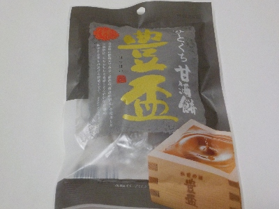
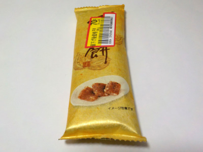
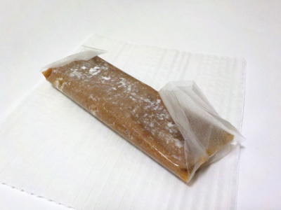

天狗堂宝船ひとくち甘酒餅 豊盃「ほうはい」
2024/03/19

ソフトキャンディーみたいなお餅でした。
クチャクチャ噛むと、甘い甘酒味が出てきて美味しかったです。
甘酒が気軽に食べれるのはいいですね。
北海道亀田郡七飯町字中島205番地
2024/03/19

ソフトキャンディーみたいなお餅でした。
クチャクチャ噛むと、甘い甘酒味が出てきて美味しかったです。
甘酒が気軽に食べれるのはいいですね。
2023/03/05

豪華なパッケージです。高級で美味しそうな感じがしました。

中にはオブラートにつつまれた板状のくるみ餅が入っていました。
オブラートって久しぶりに見たな。
くるみ餅がギュッっと固まった感じで、栄養食品っぽいって思いました。栄養満点で元気になりそうです。